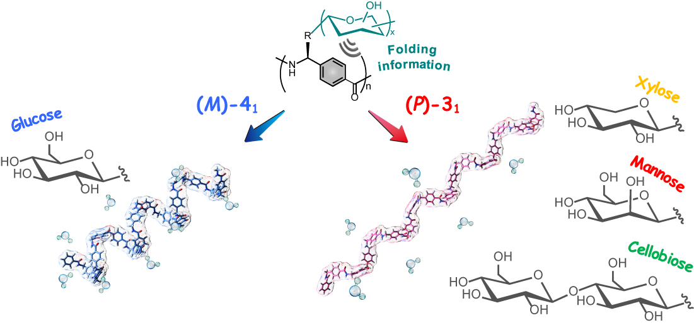

我々は以前に、不斉重合反応と重合後変換を組み合わせることで、主鎖にアリレン骨格を有する新しい非天然型ポリペプチド（"アリロペプチド"）を合成し、それらが溶液中で安定な一方向巻のらせん構造を形成することを明らかとしている。本論文では、p-フェニレン骨格を有するアリロペプチドの側鎖に糖置換基が導入されたグリコアリロペプチドを合成した。糖がD-グルコースの場合、水中において通常の右巻きのらせんではなく左巻きらせんが誘起された。興味深いことに、この現象はD-グルコース選択的であり、グルコース二分子がつながったD-セルビオースやD-グルコースのエピマーであるD-マンノースなど、その他の糖置換基では通常の右巻きらせんが誘起された。このことから、側鎖の僅かな違いを高分子主鎖が認識し、らせん構造を決定していることが明らかとなった。